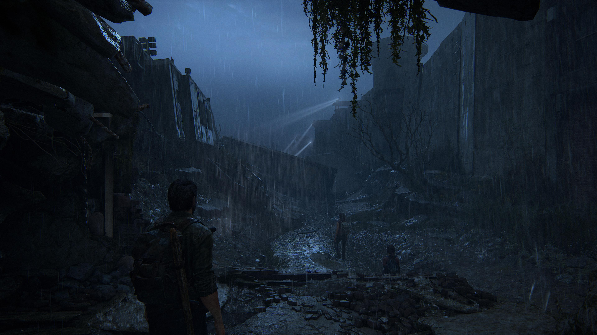
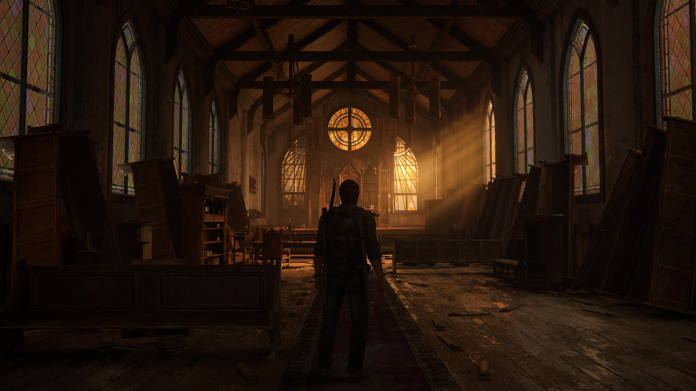
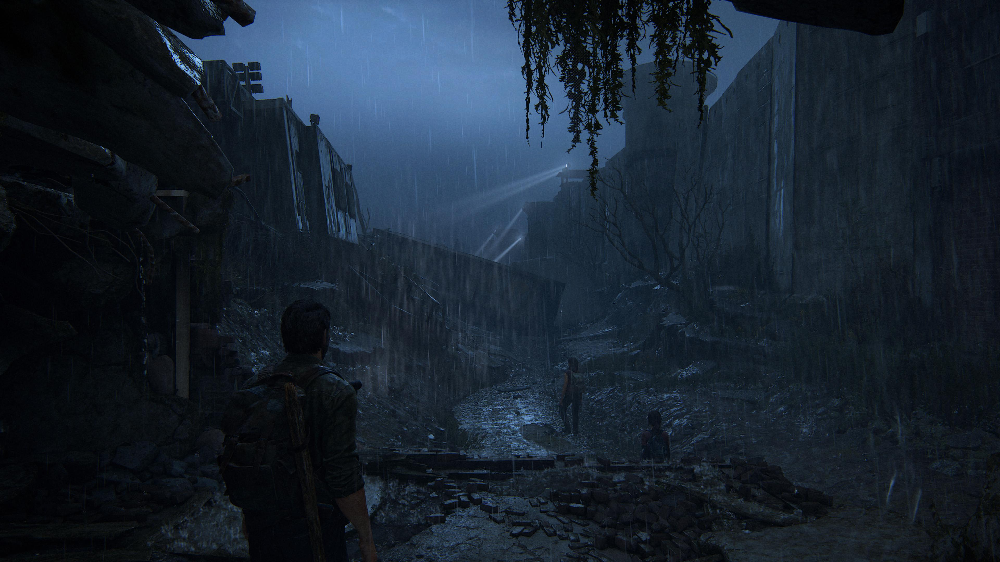
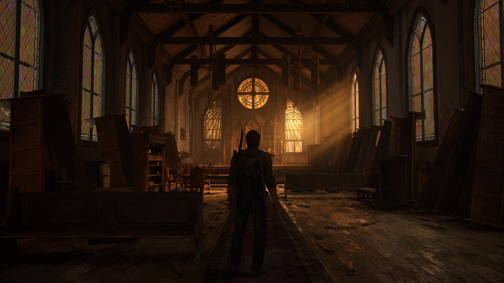

Joel
Joel teve um passado conturbado que envolvia morte de pessoas inocentes. Na introdução do jogo, é visto que a filha de Joel morre em seus braços, uma cena lamentável que nem aquela é pessima. Joel no entanto, como protagonista, parecia ser uma pessoa do bem porque o tempo todo está protegendo a Ellie de qualquer ataque e também a sua amada Tess. Joel conta que já foi dos dois lados da história, ou seja, antes de andar com a Ellie com o objetivo de protegê-la, ele já matou muitas pessoas inocentes, que podem ser chamadas de saqueadores, que no jogo tem o objetivo de saquear as pessoas que estão atravessando alguma região, no caso, os EUA.

Joel no jogo
No game, Joel se torna uma pessoa muito fria e não mostra tanto seu lado sentimental, que só é visto no final do jogo. Mesmo sendo frio, ele acaba demonstrando uma parte de preoupação em relação à Ellie, por conta da sua filha falecida. Ao longo do jogo, percebe-se que ele mostra muito afeto por ela e para mantê-la protegida qualquer custo. Com sua capacitação e grande precisão com armas, é entendido que o protagonista era muito adepto com armas, seja de curto e longo alcance. Dessa maneira, Tommy, seu irmão, conta algumas histórias do seu passado, e que ligeiramente abandonou Joel e se juntou à uma comunidade que tinha criado uma vila.
 


